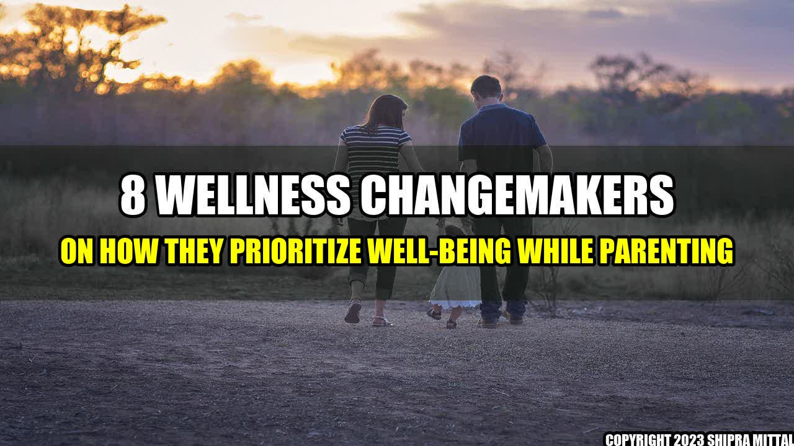

The Art of Prioritizing Well-Being While Parenting: Lessons from 8 Wellness Changemakers

Parenting is a beautiful, yet challenging journey that requires one to be mentally, emotionally and physically fit. With so many responsibilities at hand, parents often neglect their own well-being, leading to stress, burnout, anxiety and depression. However, there are some wellness changemakers who have figured out how to prioritize their well-being while raising their children. In this article, we will explore their stories and learn from their experiences.
The Story of Sarah
Elizabeth, a busy mom of two, was struggling to keep up with her day-to-day activities. She felt overwhelmed, unhappy and was on the verge of giving up. One day, she met Sarah, a wellness coach and parent of three, who transformed her life by teaching her how to prioritize her well-being. Sarah showed Elizabeth the importance of self-care and how it can benefit not only her but also her family. She encouraged her to practice mindfulness, exercise regularly and take breaks whenever needed. Thanks to Sarah, Elizabeth was able to regain control of her life and become a happier, healthier parent.
Real-Life Examples of Wellness Changemakers
Here are some real-life examples of wellness changemakers who have successfully managed to prioritize their well-being while parenting:
- Ritual: Katerina Schneider, founder of Ritual, a health supplement company, believes that prioritizing self-care is key to being a good parent. She emphasizes the importance of making time for daily exercise, eating well and sleeping enough.
- Vigor Ground Fitness: Luka Hocevar, owner of Vigor Ground Fitness, a fitness and performance coaching facility, is a father of two. He recommends parents to set realistic fitness goals, involve their children in physical activities and take breaks to unwind.
- lululemon: Robin Arzon, VP of Fitness Programming and Head Instructor at Peloton, and mother of one, believes that self-care is a non-negotiable part of parenting. She advises parents to prioritize activities that make them happy, whether it’s working out, meditating or spending time with friends.
- TED: Priya Parker, author of The Art of Gathering and mother of two, stresses the importance of creating intentional rituals and traditions with family and friends. She encourages parents to unplug, be present in the moment and make memories that will last a lifetime.
- Headspace: Andy Puddicombe, co-founder of Headspace, a meditation and mindfulness app, and father of two, believes that mindfulness is an essential tool for parents. He recommends setting aside time each day for mindful activities such as meditation, nature walks or simply taking a break to breathe.
- WHOOP: Will Ahmed, CEO and founder of WHOOP, a fitness and sleep tracking device, knows the importance of sleep for parents. He emphasizes the need for quality sleep to improve energy levels, productivity and overall well-being.
- Kinrgy: Julianne Hough, dancer, actress, and founder of Kinrgy, a mindful movement practice, recommends parents to connect with their bodies and emotions through movement. She believes that movement is a powerful tool to release stress, increase energy and boost mood.
- mindbodygreen: Colleen Wachob, co-founder and CEO of mindbodygreen, a health and wellness media platform, is a mother of one. She stresses the importance of self-reflection, gratitude and self-compassion to manage stress and promote well-being.
Conclusion
Prioritizing well-being while parenting can be a challenge, but it is possible with the right tools and mindset. From companies like Ritual, Vigor Ground Fitness and lululemon to individuals like Robin Arzon, Priya Parker and Andy Puddicombe, there are many wellness changemakers who have embraced self-care as an essential part of their parenting journey. By adopting their practices and finding what works best for you, you can also prioritize your well-being and become a happier, healthier parent.
References and Further Readings
- https://www.parents.com/parenting/better-parenting/style/these-parents-are-long-time-wellness-changemakers-and-they-have-a-few-ideas-for-you/
- https://www.nytimes.com/2019/03/11/style/how-to-prioritize-parenting.html
- https://www.forbes.com/sites/deborahlee/2019/06/18/wellness-tips-for-parents-from-top-industry-leaders/?sh=1267d8d259a1
Hashtags
#wellness #parenting #selfcare #wellnesschangemakers #mindfulness #exercise #sleep #ritual #vigorgroundfitness #lululemon #ted #headspace #whoop #kinrgy #mindbodygreen
Akash Mittal Tech Article
Share on Twitter Share on LinkedIn